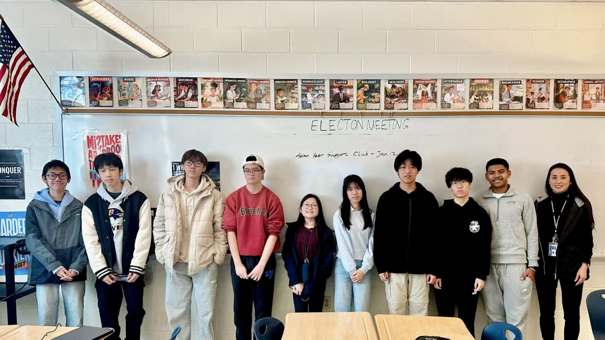
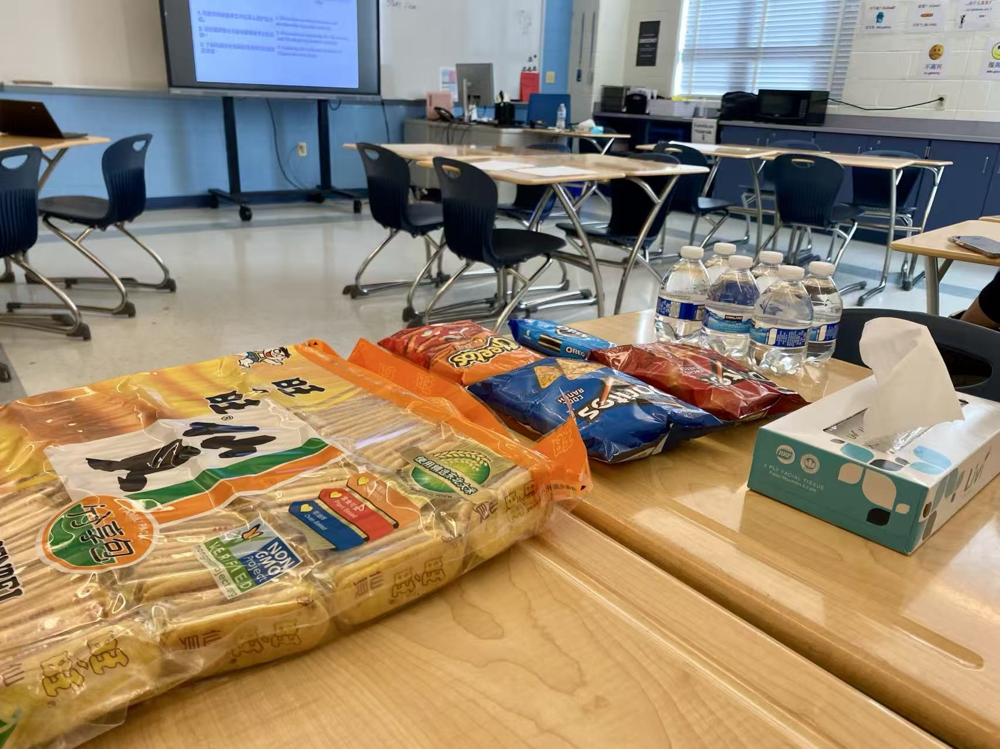
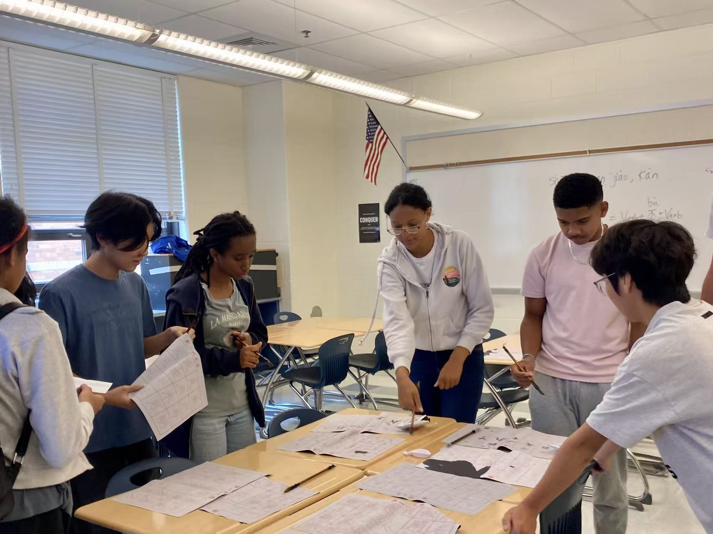

Connect. Create. Collaborate.

For Our Community
Asian Peer Support Club's general meetings are designed to foster a sense of community, creativity, as well as collaboration among students of all backgrounds. Each week, we gather in a welcoming and warm environment to engage in meaningful discussions, enjoy delicious snacks, play interesting games, and work on various creative projects together. Whether it's brainstorming ideas for upcoming events, sharing personal stories, or simply connecting over shared experiences, our general meetings provide a safe and inclusive space for students to express themselves and build lasting friendships. We believe that by coming together regularly, we can create a stronger, more supportive community where everyone feels valued and heard.


Achievements
Since the inception of our general meetings, we have seen a remarkable increase in student engagement and participation. Our meetings have become a vibrant hub for students to connect, share ideas, and collaborate on various projects. We have successfully organized multiple events that were born out of the creativity and enthusiasm generated during these meetings. From cultural celebrations to community service initiatives, our general meetings have been instrumental in fostering a sense of belonging and empowerment among our members. The positive feedback and growing attendance at our meetings are a testament to the impact they have had on our school community, and we are excited to continue building on this momentum in the future.